O tecnólogo formado neste curso ocupa-se do desenvolvimento de programas, de interfaces e aplicativos, do comércio e do marketing eletrônicos, além de sítios e portais para internet e intranet. Gerencia projetos de sistemas, inclusive com acesso a banco de dados, desenvolvendo projetos de aplicações para a rede mundial de computadores e integra mídias nos sítios da internet. Atua com tecnologias emergentes como computação móvel, redes sem fio e sistemas distribuídos. Cuidar da implantação, atualização, manutenção e segurança dos sistemas para internet também são suas atribuições.
Empresas de assessoria e consultoria tecnológica e de desenvolvimento de sistemas; indústria; comércio; prestação de serviços; instituições financeiras; órgãos públicos; empreendedor em informática.
Duração: 3 anos
Carga horária: 2800 horas
Horários: matutino do 1º ao 4º ciclo e noturno do 5º ao 6º ciclo
| 1º Ciclo | 2º Ciclo | 3º Ciclo | 4º Ciclo | 5º Ciclo | 6º Ciclo |
|---|---|---|---|---|---|
| Algoritmos e lógica de programação | Estruturas de dados | Acessibilidade | Banco de dados e Internet II | Desenvolvimento para dispositivos móveis I | Arquitetura orientada a serviços |
| Bases da Internet | Inglês II | Banco de dados e Internet I | Desenvolvimento para servidores I | Desenvolvimento para Servidores II | Criação de empresas para Internet |
| Criação de conteúdo na web | Legislação aplicada à Internet | Engenharia de software para web | Inglês IV | Inglês V | Desenvolvimento para dispositivos móveis II |
| Design digital | Matemática discreta | Estatística | Projeto de navegação e Interação | Negócios e marketing eletrônicos | Inglês VI |
| Fundamentos de matemática elementar | Padrões de projeto de sítios Internet II | Inglês III | Prática de Gestão de Projetos | Projeto de prototipagem e testes de usabilidade | Projeto de trabalho de graduação em sistemas |
| Inglês I | Prática de design | Programação de sítios Internet | Segurança em sistemas para Internet | Projeto do trabalho de graduação em sistemas | Tópicos especiais em sistemas para Internet III |
| Leitura e produção de textos | Redes e Internet | Servidores e seus sistemas operacionais | Tópicos especiais em sistemas para Internet I | Tópicos especiais em sistemas para Internet II | |
| Padrões de projeto de sítios Internet I |
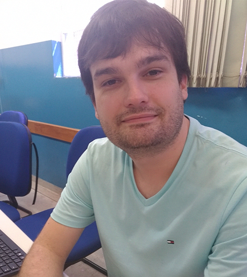
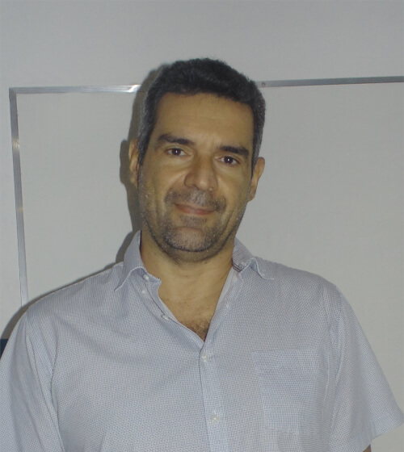
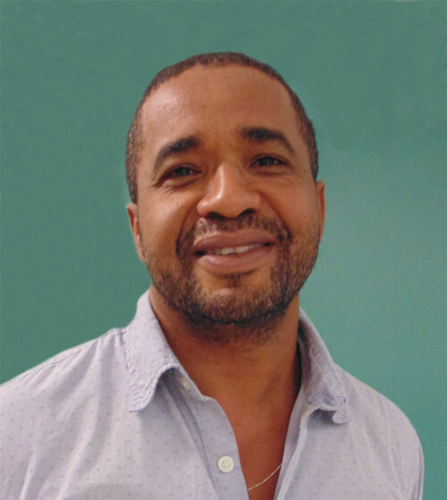
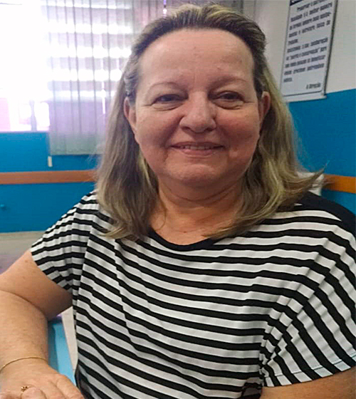
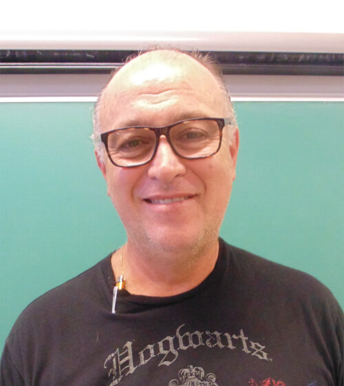
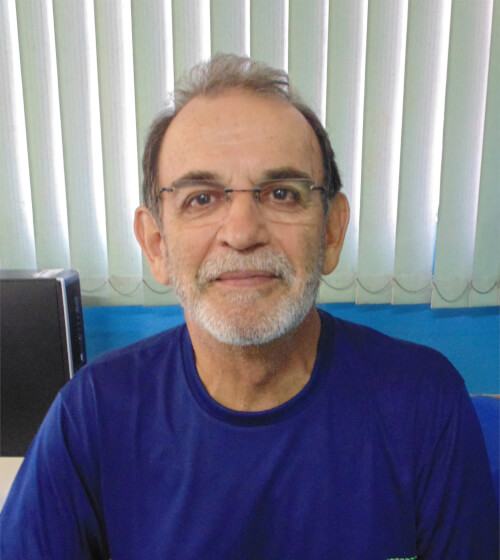
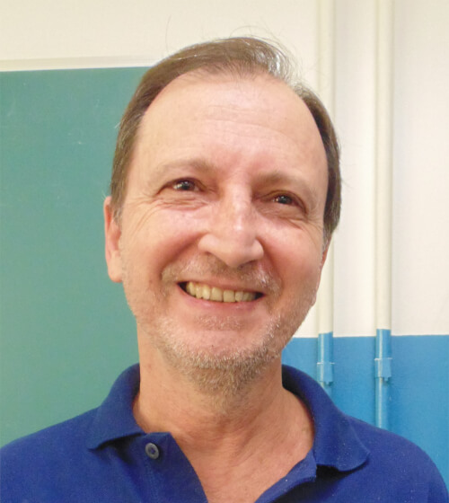
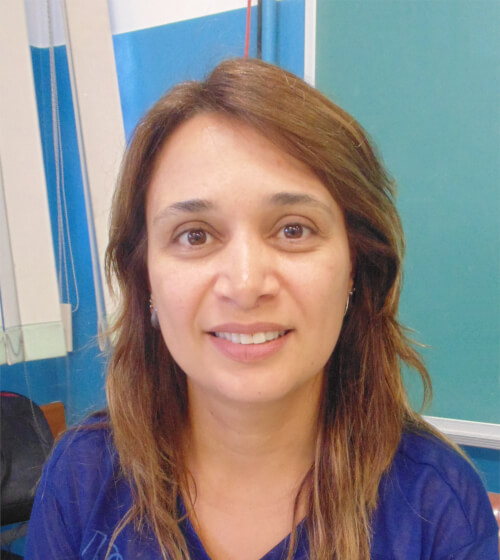
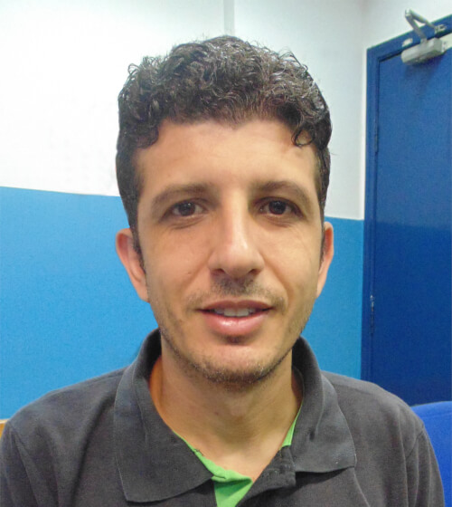
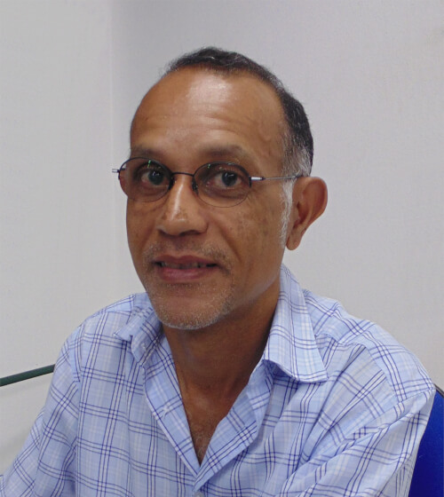
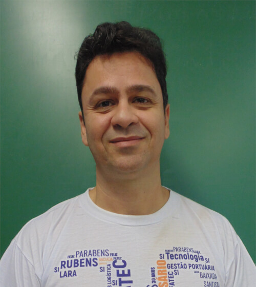
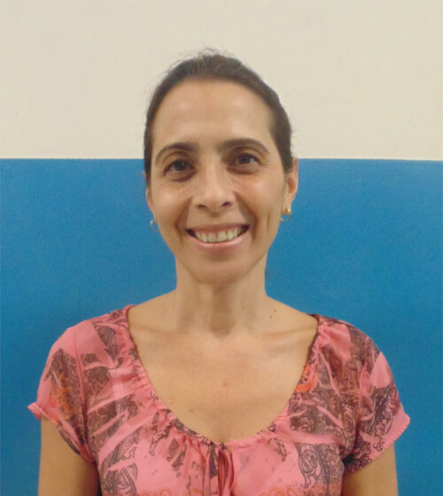
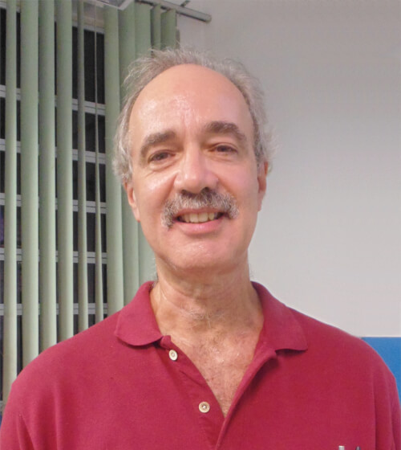
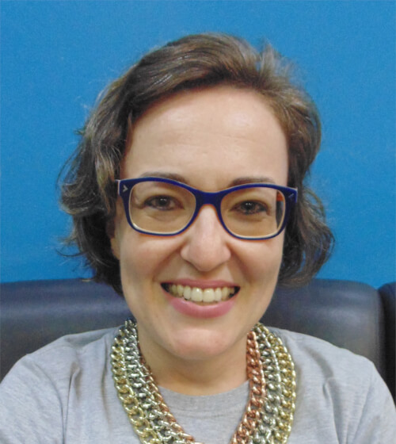
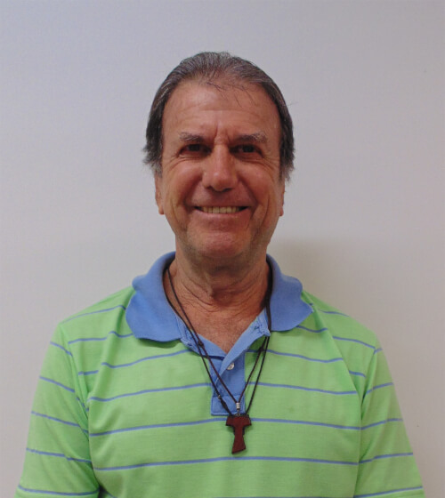